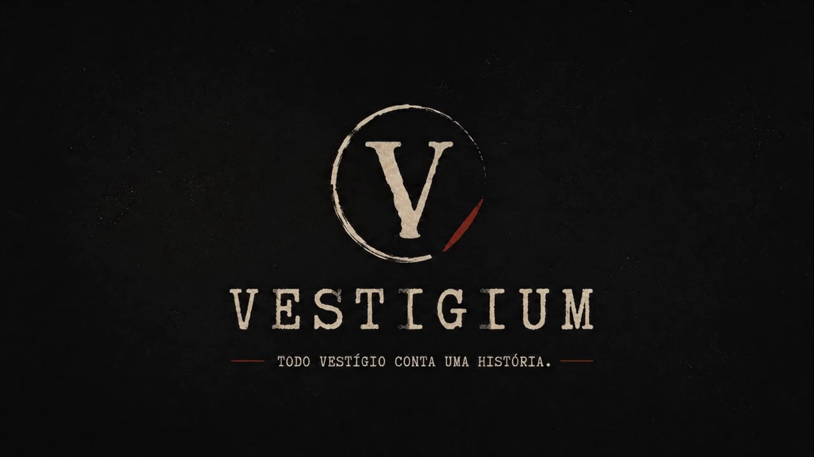
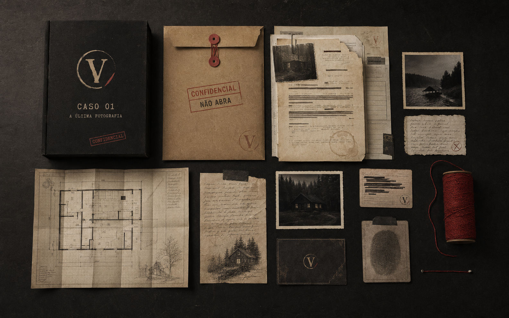

Caçadores de mistérios
Para quem encontra prazer em enigmas, padrões e perguntas ainda sem resposta.
Cada detalhe importa.

Arquivo confidencial · Caso 01
Quatro amigos. Um chalé isolado.
Uma fotografia que não deveria existir.
Relatório preliminar · 001
REG. VTG–01 / AUT. AEm A Última Fotografia, vocês assumem o papel dos investigadores. Dentro do caso, documentos, fotografias, códigos e relatos conduzem a uma história que só pode ser compreendida quando todas as evidências forem reunidas.
Observem em conjunto, confrontem versões e conectem aquilo que parece isolado. A resposta não está em uma única pista — está no vestígio que o grupo quase deixou passar.
Inventário de evidências
Um conjunto físico criado para ser manuseado, comparado e reorganizado enquanto a investigação avança.

Conteúdo apresentado sem revelar elementos decisivos da investigação.
Procedimento de campo
Uma investigação completa em três movimentos claros.
Reúna o grupo, organize os materiais e leia as instruções iniciais.
O arquivo é aberto.
Observe documentos, interprete códigos e conecte informações aparentemente isoladas.
As versões são confrontadas.
Formule sua conclusão e verifique se a investigação chegou à resposta correta.
A verdade é registrada.
Experiência Vestigium
Vestigium não é apenas um conjunto de quebra-cabeças. É uma experiência construída para transformar uma mesa, alguns documentos e um grupo de amigos em uma investigação completa.
Classificação técnica
Uma leitura objetiva da experiência para que o grupo saiba o que levar para a mesa.
Perfis de interesse
Para quem encontra prazer em enigmas, padrões e perguntas ainda sem resposta.
Cada detalhe importa.
Uma noite diferente, construída por conversa, observação e hipóteses improváveis.
Hipóteses são melhores em conjunto.
A tensão colaborativa de uma investigação imersiva, agora sobre a própria mesa.
A investigação começa onde a sala termina.
Para quem prefere descobrir a resposta em equipe e dividir cada nova suspeita.
Uma noite para descobrir juntos.
Registros do arquivo
Examine os materiais. Nenhuma solução será revelada.
Desafio aberto
Novos enigmas e vestígios da investigação poderão ser publicados nos canais oficiais da Vestigium.
Acompanhar os enigmas no InstagramArquivo disponível em breve
VSTG · CASO 01Tudo o que vocês precisam para conduzir o caso estará dentro do arquivo.
Disponibilidade em definição
Entrar na lista de investigadores Seja avisado quando o Caso 01 estiver disponível.Interrogatório rápido
Informações ainda não confirmadas estão identificadas para evitar conclusões prematuras.
Fim do relatório preliminar
As evidências foram reunidas. Agora, falta alguém capaz de interpretá-las.
Abrir o Caso 01